Sí, soy un fanatico de la lectura.
Estos son algunos de los libros que he tenido la fortuna de leer
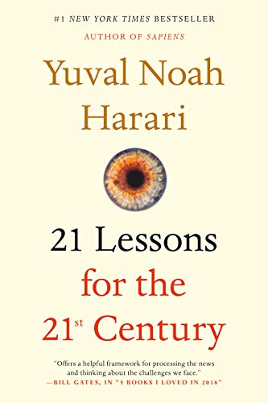
21 lessons for the 21st century
Yuval Noah Harari.
21 lessons for the 21st century
Yuval Noah Harari.
21 lessons for the 21st century
Yuval Noah Harari.
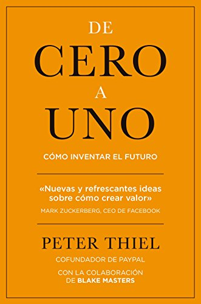
De cero a uno: Cómo inventar el futuro.
Peter Thiel.
LA VÍA RÁPIDA DEL MILLONARIO.
M.J. DE MARCO.
Evicted: Poverty and Profit in the American City.
Matthew Desmond.
Las 33 estrategias de la guerra.
Robert Greene.
De animales a dioses: Breve historia de la humanidad (Sapiens).
Yuval Noah Harari.
Homo deus: Breve historia del mañana.
Yuval Noah Harari.
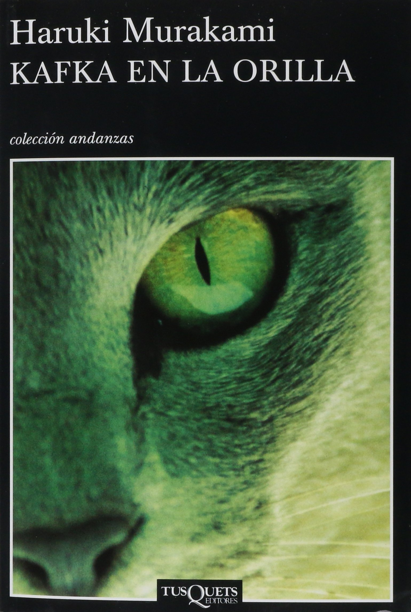
Kafka en la orilla.
Haruki Murakami.

La ladrona de libros.
Markus Zusak.
Mil soles espléndidos.
Khaled Hosseini.
Cometas en el cielo.
Khaled Hosseini.
El proyecto esposa.
Graeme Simsion.
El poder del ahora.
Eckhart Tolle.
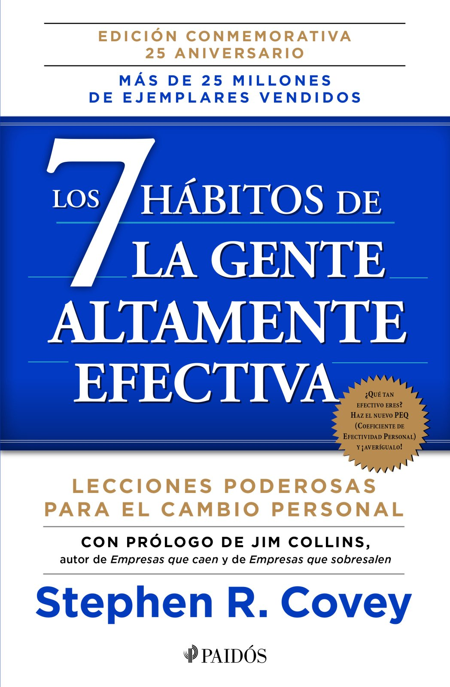
Los 7 hábitos de la gente altamente efectiva.
Stephen R. Covey.
MENOS MIEDOS, MAS RIQUEZAS.
Juan Diego Gómez Gómez.
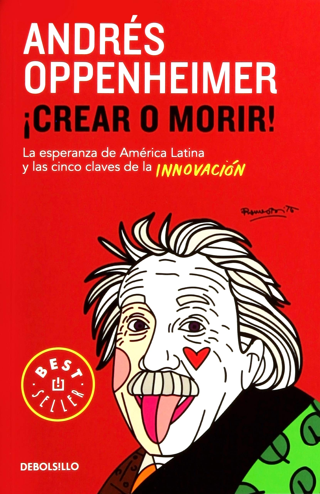
¡Crear o morir!: La esperanza de América Latina y las cinco claves de la innovación.
Andrés Oppenheimer.
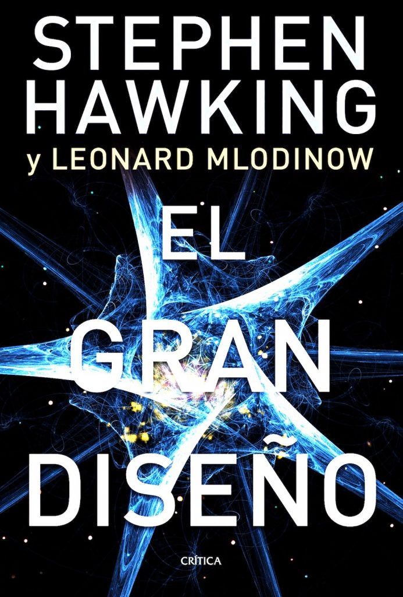
El gran diseño.
Stephen Hawking.
Vendes o vendes: Cómo salirte con la tuya en los negocios y en la vida.
Grant Cardone.

Padre Rico, Padre Pobre: Qué les enseñan los ricos a sus hijos acerca del dinero.
Robert T. Kiyosaki.
Crónica de una muerte anunciada.
Gabriel García Márquez.
Steve Jobs. La biografía.
Walter Isaacson.
Los Secretos De La Mente Millonaria.
T. Harv Eker.
Arte de la seducción.
Robert Greene.
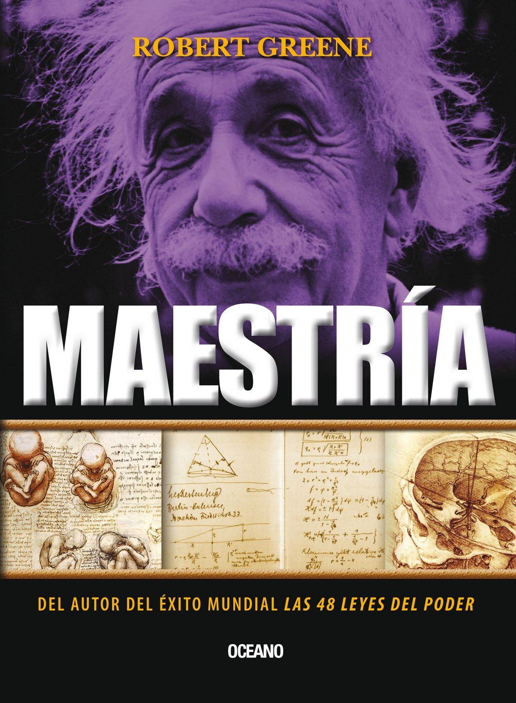
Maestría.
Robert Greene.
Made in America: Mi Historia.
Sam Walton.
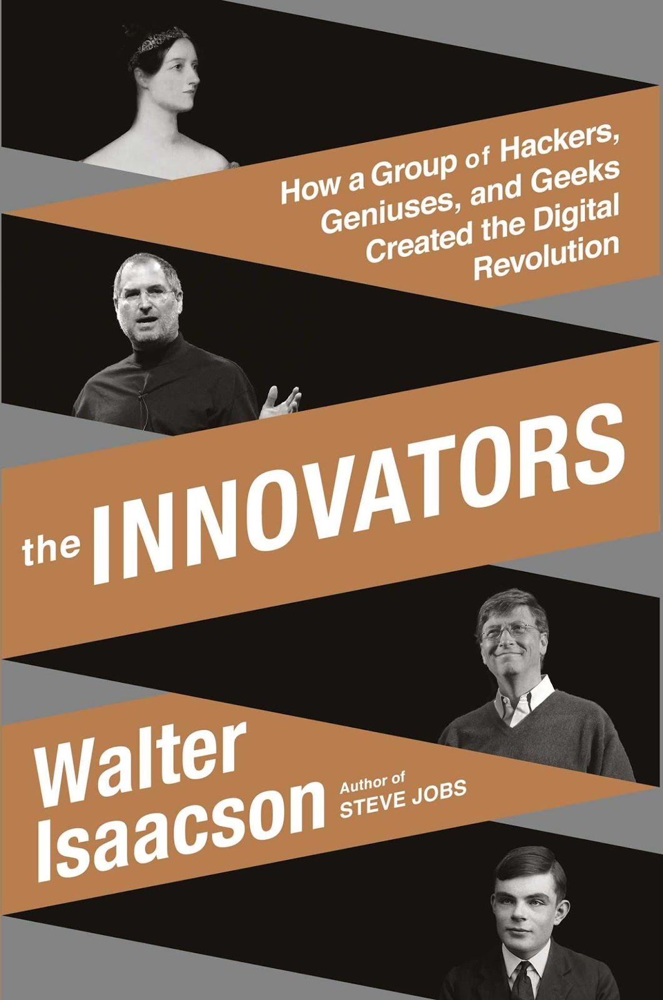
Los innovadores: Los genios que inventaron el futuro.
Walter Isaacson.
Tu Primer Millón: Una historia de perseverancia y liderazgo indispensable para todo emprendedor.
Osvaldo Ramírez.
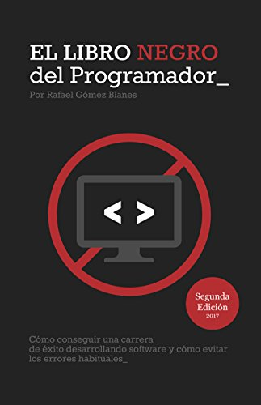
El Libro Negro del Programador: Cómo conseguir una carrera de éxito desarrollando software y cómo evitar los errores habituales.
Rafael Gómez Blanes.
La vaca púrpura: Diferénciate para transformar tu negocio.
Seth Godin.
El millonario de la puerta de al lado.
William D. Danko.
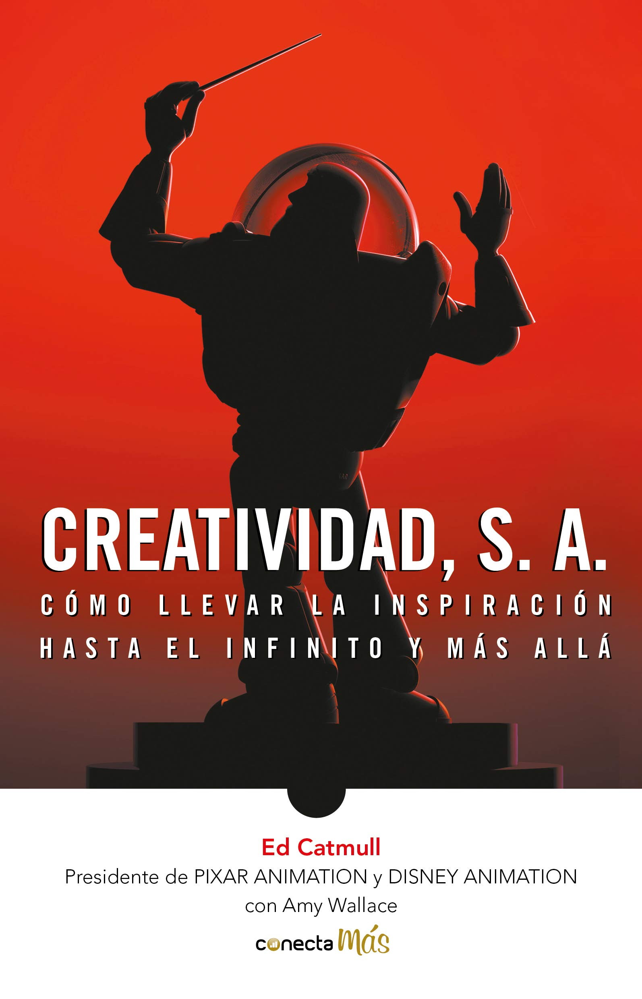
Creatividad, S.A.: Cómo llevar la inspiración hasta el infinito y más allá.
Edwin Catmull.
Nunca pares: Autobiografía del fundador de Nike.
Phil Knight.
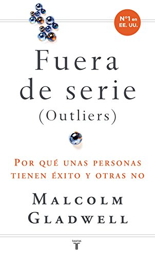
Fuera de serie: Por qué unas personas tienen éxito y otras no.
Malcolm Gladwell.
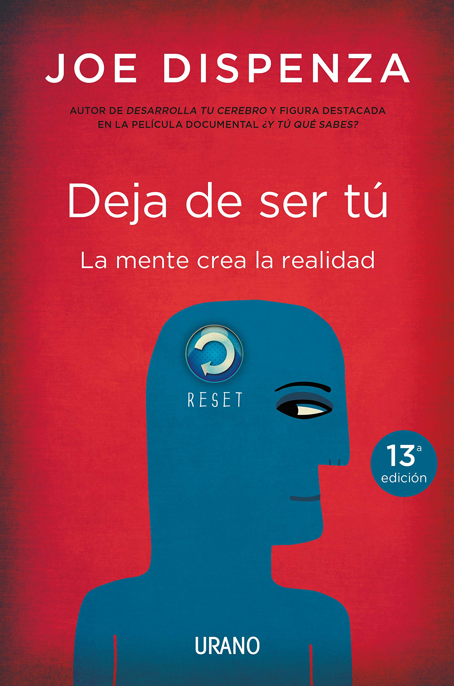
Deja de ser tú (Crecimiento personal).
Joe Dispenza.
El hombre en busca de sentido.
Viktor Frankl.
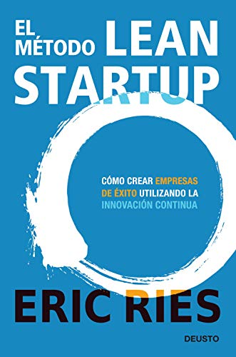
El método Lean Startup: Cómo crear empresas de éxito utilizando la innovación continua.
Eric Ries.
{kind=link}
{kind=link}
{kind=link}
{kind=link}
{kind=link}
{kind=link}
{kind=link}
{kind=link}
{kind=link}
{kind=link}
{kind=link}
{kind=link}
{kind=link}
{kind=link}
{kind=link}
{kind=link}
{kind=link}
{kind=link}
{kind=link}
{kind=link}
{kind=link}
{kind=link}
{kind=link}
{kind=link}
{kind=link}
{kind=link}
{kind=link}
{kind=link}
{kind=link}
{kind=link}
{kind=link}
{kind=link}
{kind=link}
{kind=link}